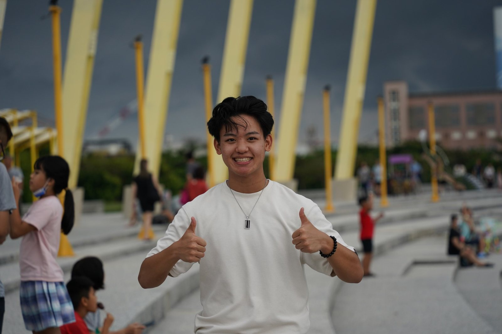
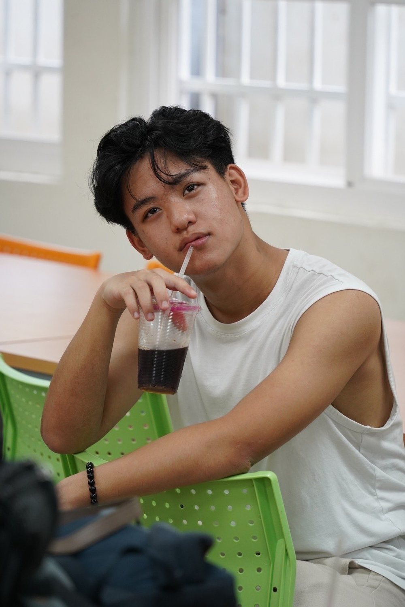

Teaching in Taiwan
In the summer of 2023 I joined a foreign language education program in Taiwan. I was elected student body president and became the lead foreign English teacher.

What I did
The program brought students from abroad to teach English in Taiwan. As student body president, I was the link between the students, the teachers, and the program's organizers.
As lead foreign English teacher, I ran workshops that trained other foreign educators in how to teach: planning lessons, managing a classroom, and adjusting for students at different levels.
How it came together
-
Find the gap
New teachers arrived with good English but no experience standing in front of a class. That was the problem the workshops needed to solve.
-
Build repeatable workshops
I put together workshops that could be run again and again with each new group, so the training didn't depend on any one person being in the room.
-
Scale it
Over the summer we ran 60+ workshops and trained 750+ foreign educators.
-
Recognition
The work was recognized by the Taiwan Governor and featured in national media.
By the numbers
- 60+
- workshops led
- 750+
- foreign educators trained
- National
- media coverage
Photos

What it taught me
Leading people who are all figuring something out for the first time, in a second language and a different culture, taught me to explain things simply and build processes other people can run without me.